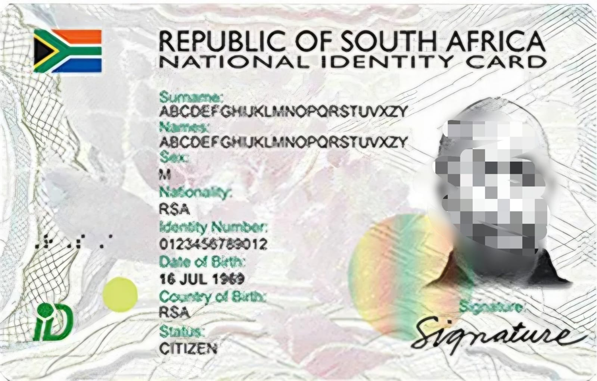
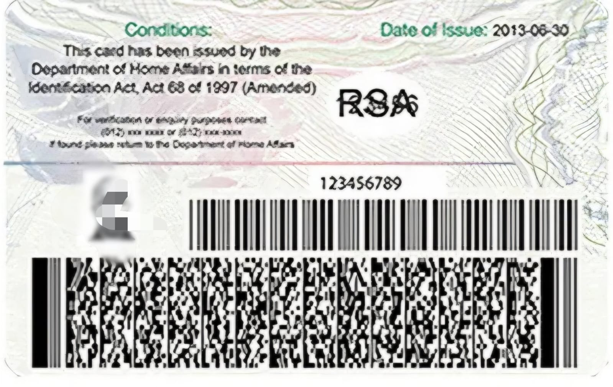
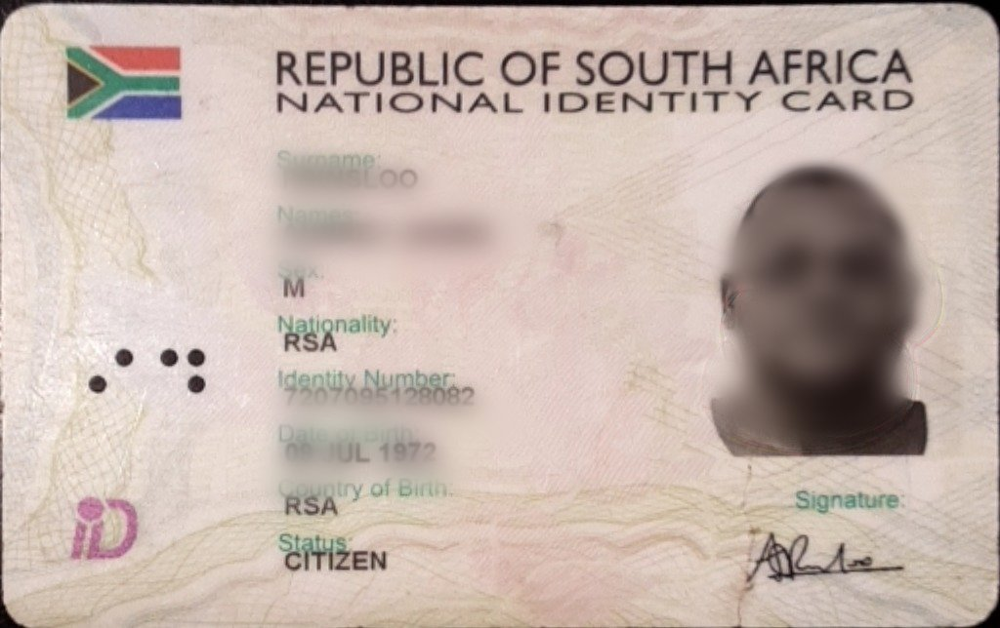
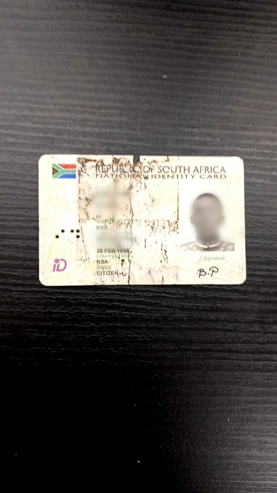

Authentic Smart ID
Front (Authentic)

Back (Authentic)

Authentic Features
- Color: Blue and white design
- Material: Polycarbonate plastic
- Chip: Visible gold-colored chip
- Hologram: 3D holographic element
- Microprinting: Tiny text (magnification needed)
- UV Features: Visible under UV light
- Watermark: Faint background watermark
Fake Smart ID

Common Fake Methods
- Chip cloning
- Photo replacement
- Data manipulation
- Poor printing
- Missing holograms
- Chip issues
Common Indicators
Misaligned or non-functional chips, poor printing, missing or blurry holograms, incorrect color gradients, and low-quality photographs.
Damaged Smart ID

Common Damage Types
- Cracked or broken card
- Worn-out chip
- Faded or scratched surface
- Peeling layers (delamination)
- Water or heat damage
Risk Indicators
- ⚠️ Chip not readable
- ⚠️ Photo unclear or distorted
- ⚠️ Missing security features
- ⚠️ Data partially unreadable
Important: A damaged ID is not automatically fraudulent, but must be verified with extra caution.
Red Flags

- 🚩 Misaligned or damaged chip
- 🚩 Poor color reproduction
- 🚩 Missing 3D hologram
- 🚩 Scratches or damage
- 🚩 Incorrect font or spacing
- 🚩 Faded information
- 🚩 Chip not responding
- 🚩 Altered or pasted photo
Verification Procedure
Step 1: Visual Inspection
- Check overall appearance
- Look for holograms and watermarks
- Verify text clarity
- Check photo quality
Step 2: Physical Examination
- Feel material texture
- Check for tampering
- Inspect edges
- Look for raised elements
Step 3: Electronic Verification
- Test chip functionality
- Scan barcode
- Match stored data
- Check encryption
Step 4: Information Verification
- Cross-check databases
- Verify ID format
- Check validity dates
- Confirm personal info